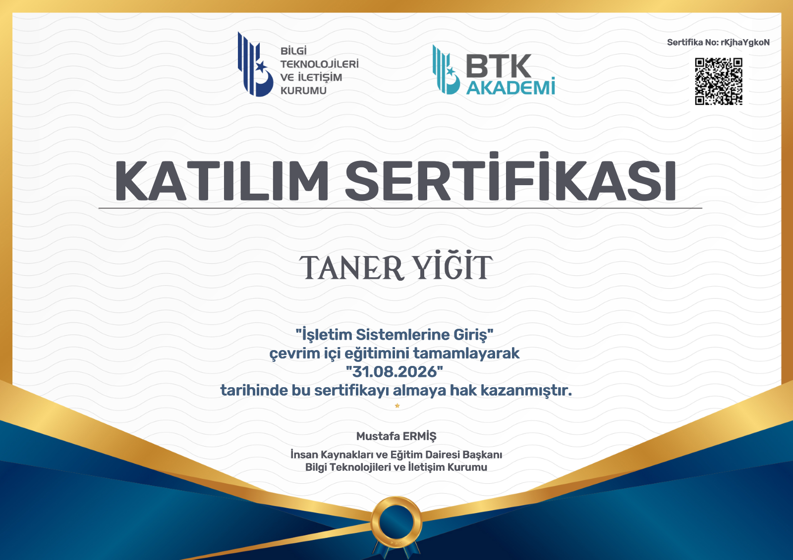

Merhaba, ben Taner.
Güvenilir teknoloji operasyonları tasarlıyorum.
Kurumsal IT altyapısı, kullanıcı desteği, ağ operasyonları ve siber güvenlik odağında çalışıyorum.
Bilgi İşlem · BT Operasyonları
Sistemleri ayakta, iş akışını güvende tutuyorum.
Merhaba, ben Taner.
Kurumsal IT altyapısı, kullanıcı desteği, ağ operasyonları ve siber güvenlik odağında çalışıyorum.
01 · Hakkımda
Yalnızca sorun çözmek değil; tekrarını önleyen, düzenli ve sürdürülebilir sistemler kurmak benim için işin asıl değerli kısmı.
02 · Odak Alanları
Günlük destekten altyapı güvenliğine kadar uçtan uca, takip edilebilir teknik süreçler.
Altyapı, sistem ve ağ desteği
Hızlı ve takip edilebilir çözümler
Ağ, Linux ve sanallaştırma
Modern, hızlı ve erişilebilir arayüzler
Arıza tespiti, bakım ve kurulum
Performans ve güvenli sadeleştirme
03 · Sertifikalarım
BTK Akademi üzerinden tamamladığım bilgi teknolojileri ve işletim sistemleri eğitimleri.

PDF’yi görüntüle ↗04 · Aktif Projelerim
Oynanabilir iki aktif proje ve sıradaki çalışma için geliştirme vitrini.
Oynanabilir 2D yapı; yapay zekâ destekli oyun sistemleri, etkileşim akışları ve performans optimizasyonu üzerinde aktif geliştirme sürüyor.
Babylon.js ile geliştirilen 3D FPS deneyimi; beş zombi dalgası, ganimet sistemi, farklı silah sınıfları ve tahliye döngüsü.
Sıradaki deneysel çalışma bu alanda yayınlanacak.
SLOT REZERVE05 · Deneyim & Ödüller
Operasyonel sorumluluk, sistem sürekliliği ve yüksek hızda doğruluk odağında seçili deneyim ve başarılar.
İstanbul Nişantaşı Üniversitesi · Teknoloji Destek Hizmetleri
10FastFingers Türkiye · Rekabetçi yazım testi
06 · İletişim
Yeni projeler, iş birlikleri ve profesyonel bağlantılar için bana ulaşabilirsiniz.
DOĞRUDAN E-POSTAtaneryigit.it@gmail.com